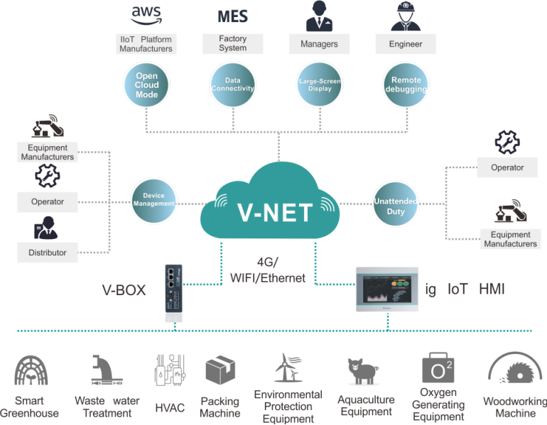
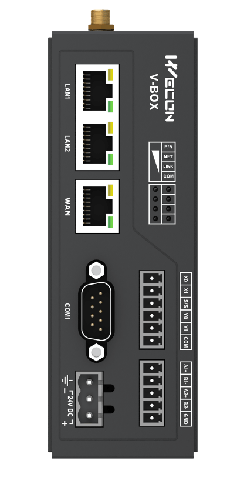

OEE & Paradas
Rendimiento por línea, pérdidas, cuellos de botella y reportes automáticos para mejora continua.

Cloud SCADA with no annual fees — Improves Accountability
Conectá vBox y HMI ig a V‑NET para visualizar en tiempo real, recibir alarmas y operar de forma remota con seguridad y trazabilidad. Sin licencias ocultas: tecnología accesible, soporte local y resultados medibles.
El vBox es la pasarela IIoT que une equipos de planta con la nube: Ethernet/RS232/RS485, protocolos industriales (Modbus RTU/TCP), Lua para edge computing, WVPN para soporte y programación remota, y opciones Wi‑Fi/4G según el modelo (H‑00/H‑WF/H‑AG/H‑4G…).

Las HMI PI3000ig combinan funciones HMI clásicas con capacidades IIoT/V‑NET: visualización local y en la nube, Cloud SCADA, alarmas, históricos, pass‑through y gestión de dispositivos.
Rendimiento por línea, pérdidas, cuellos de botella y reportes automáticos para mejora continua.
kWh por equipo, alarmas y reportes de costo/ton para decisiones rápidas y ahorro sostenido.
Vibración/temperatura, tendencias y mantenimiento antes de la falla para maximizar disponibilidad.
Cloud SCADA sin cuotas anuales, soporte local y despliegue ágil con vBox y HMI ig.
Access the Demo Today!
Ver catálogo IIoT
Solicitá asesoramiento